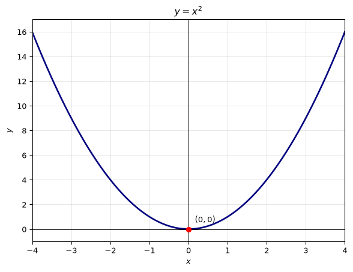
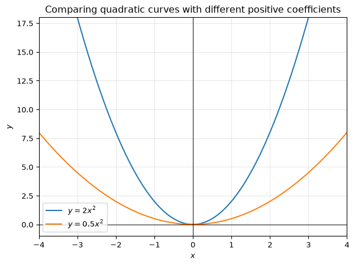
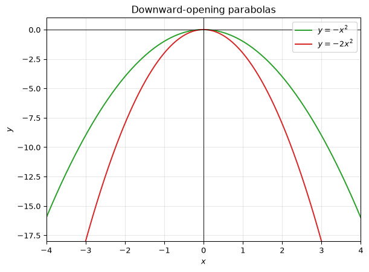
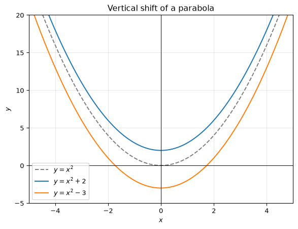
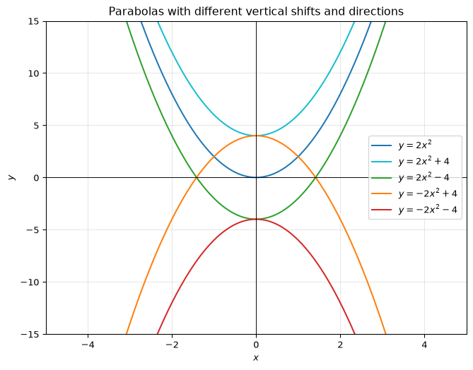
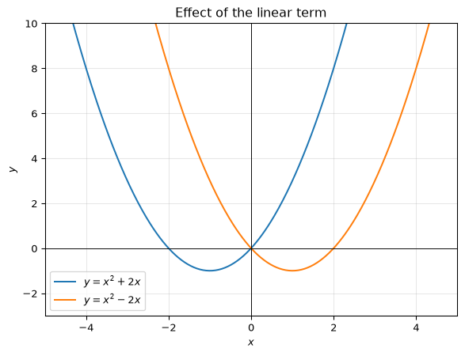
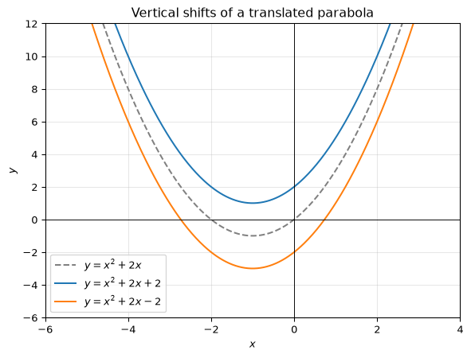

Session 2 - Exploring Quadratic Curves - Answers
Introduction
These are worked responses to the questions in the exploration task. The aim is to help you see how the coefficients in a quadratic expression affect the graph.
1. Exploring y=ax^2
Take values such as x=-3,-2,-1,0,1,2,3.
For y=x^2:
| x | y=x^2 |
|---|---|
| -3 | 9 |
| -2 | 4 |
| -1 | 1 |
| 0 | 0 |
| 1 | 1 |
| 2 | 4 |
| 3 | 9 |
The graph is symmetric about the y-axis, because (-x)^2=x^2. It is a U-shaped curve called a parabola. The lowest point is the vertex at (0,0).
2. Comparing y=2x^2 and y=0.5x^2
Both graphs are parabolas with vertex at (0,0), and both are symmetric about the y-axis.
- y=2x^2 rises more quickly as |x| increases, so it is narrower.
- y=0.5x^2 rises more slowly, so it is wider.
- The lowest point of each graph is still (0,0).

3. Comparing y=-x^2 and y=-2x^2
These curves open downward because the coefficient of x^2 is negative.
- y=-x^2 is a downward parabola with highest point (0,0).
- y=-2x^2 is also downward, but it falls more steeply, so it is narrower.
- The highest point of each graph is the vertex at (0,0).

4. Effect of the coefficient of x^2
From the graphs we see:
- If a>0, the graph opens upward and has a minimum point.
- If a<0, the graph opens downward and has a maximum point.
- The larger |a| is, the narrower the parabola.
- The smaller |a| is, the wider the parabola.
So the coefficient of x^2 controls both the direction and the width of the parabola.
5. Exploring y=ax^2+c
Consider y=x^2+2 and y=x^2-3.
The shape remains the same as y=x^2, because the coefficient of x^2 is still 1. But the whole graph shifts upward or downward:
- y=x^2+2 is shifted upward by 2 units.
- y=x^2-3 is shifted downward by 3 units.
The vertex moves from (0,0) to (0,2) and (0,-3) respectively.

The graphs intersect the y-axis at the points (0,2) and (0,-3) respectively. In general, adding a positive constant shifts the graph upward; subtracting a constant shifts it downward.
6. Exploring y=2x^2, y=2x^2+4, y=2x^2-4, y=-2x^2+4, and y=-2x^2-4
These graphs all have the same general shape as a parabola, but different vertical positions and openings.
- y=2x^2 has vertex at (0,0) and opens upward.
- y=2x^2+4 has vertex at (0,4) and opens upward.
- y=2x^2-4 has vertex at (0,-4) and opens upward.
- y=-2x^2+4 has vertex at (0,4) and opens downward.
- y=-2x^2-4 has vertex at (0,-4) and opens downward.

The x-intercepts depend on the equation. For example, y=2x^2-4=0 gives x^2=2, so the graph cuts the x-axis at approximately x=\pm 1.41. The y-intercept is the value of c when x=0.
7. Effect of a and c
From the observations:
- The coefficient a controls the width and direction of the parabola.
- If a>0, the parabola opens upward.
- If a<0, the parabola opens downward.
- The constant term c shifts the graph vertically upward or downward without changing its shape.
So the graph of y=ax^2+c is a parabola whose vertex is at (0,c).
8. Exploring y=ax^2+bx
Consider:
- y=x^2+2x
- y=x^2-2x
These curves are still parabolas, but the linear term changes the position of the vertex. The graph is not centered on the y-axis anymore.
For y=x^2+2x, the vertex is at x=-1. For y=x^2-2x, the vertex is at x=1.

The shape is still the same as a parabola, but the vertex shifts left or right as well as down or up. The x-term changes the horizontal position of the graph and moves the vertex, while the coefficient of x^2 still controls whether it opens upward or downward.
9. Effect of the coefficient of x
The coefficient of x moves the vertex horizontally as well as vertically. The vertex of a parabola given by y=ax^2+bx is at x=-\frac{b}{2a}.
- In y=x^2+2x, the vertex is shifted to the left and down.
- In y=x^2-2x, the vertex is shifted to the right and down.
- in y=-x^2+2x, the vertex is shifted to the left and up.
- in y=-x^2-2x, the vertex is shifted to the right and up.
The sign of the coefficient tells us the direction of the shift:
- a positive coefficient moves the vertex left,
- a negative coefficient moves the vertex right.
- The up and down movement is dependent on the sign of the coefficient of x^2.
The overall shape remains a parabola, and the coefficient of x^2 still determines whether it opens upward or downward.
10. Exploring y=ax^2+bx+c
Now consider:
- y=x^2+2x+2
- y=x^2+2x-2
These are the same parabola as y=x^2+2x, but shifted vertically upward or downward by 2 units.
- y=x^2+2x+2 has vertex at (-1,1).
- y=x^2+2x-2 has vertex at (-1,-3).

The shape does not change; only the vertical position changes. The constant term c moves the whole graph up or down.
11. Summarising the observations
From all the examples, we can conclude:
- The coefficient of x^2 controls the shape of the parabola.
- If a>0, it opens upward.
- If a<0, it opens downward.
- A larger value of |a| makes it narrower; a smaller value makes it wider.
- The coefficient of x shifts the graph horizontally and vertically by changing the position of the vertex.
- A positive coefficient of x moves the vertex to the left.
- A negative coefficient of x moves the vertex to the right.
- The constant term c shifts the graph vertically upward or downward without changing its basic shape.
So the general quadratic function
y=ax^2+bx+c
has a parabolic graph whose direction, width, position, and vertical shift are all determined by the values of a, b, and c.
Final note
The key idea is that changing the coefficients changes the graph in a predictable way:
- a changes the opening and width,
- b changes the position of the vertex,
- c changes the vertical position. This is why a quadratic equation can be understood both algebraically and geometrically as a curve with a particular shape and location.